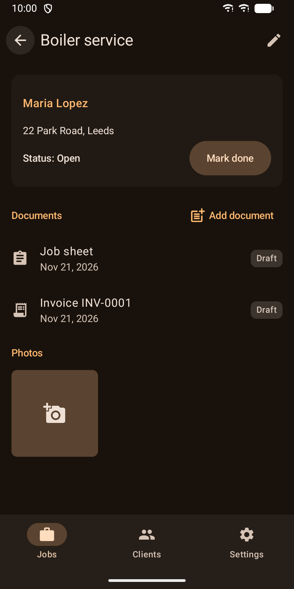
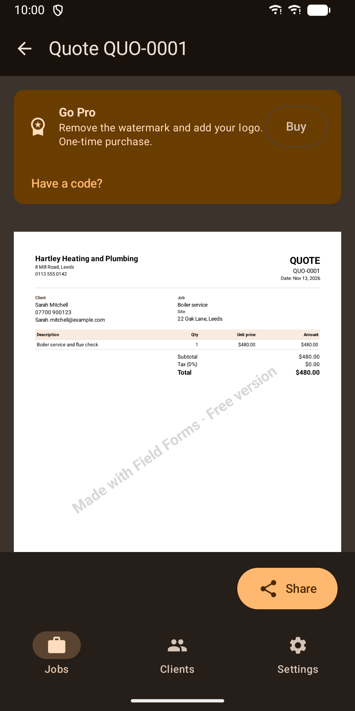
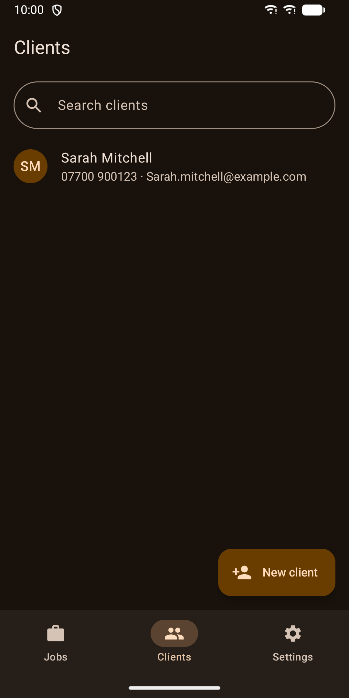

Field Forms: Job Sheets & PDFs
Job sheets, checklists, quotes and invoices with photos and signatures as PDFs







About
Field Forms is the paperwork app for solo tradespeople and small crews: electricians, plumbers, heating engineers and general builders. Fill in job forms, take photos, get the client's signature and send a clean PDF from your phone. It works without signal and without an account. JOBS AND FORMS - Jobs with a client, a site address, and as many documents and photos as you need - Job sheets, service reports and inspection checklists (pass, fail or N/A, plus your own items) - A job can hold several forms of the same kind - Mark a job done to move it to the archive, and search by title, client, address or document number QUOTES AND INVOICES - Line items with quantity and unit price, tax rate and totals - Discounts and deposits as negative lines - Automatic numbering such as QUO-0001 and INV-0001, with prefixes you choose - A quote signed by the client counts as accepted and converts to an invoice in one tap - Due dates, paid and unpaid tracking, and an overdue marker PHOTOS AND SIGNATURES - Add photos from your camera app or gallery, with captions - Photos are resized, and location and camera details are removed - The client signs on the screen - Save your own signature once and reuse it PDF AND SHARING - Your business name, address, phone, email and tax ID on every document - Photos with captions and times added to job sheets, reports and checklists - A4 or Letter page size - Share by email, WhatsApp or SMS from the share sheet. The client's email is filled in for you. - Signed or shared documents become read-only. Duplicate one to make changes. CLIENTS - A reusable client list with call, email and map shortcuts - Erase a client together with all their jobs, documents and photos in one step PRIVACY AND BACKUP - No account, no server and no analytics. Your data stays on your phone. - Optional PIN or fingerprint lock - Export a backup to Files or Google Drive, with optional AES-256 password protection, and restore it later HOME SCREEN WIDGET Shows your unpaid and overdue invoice totals and a button to start a new job. Amounts are hidden while the app lock is on. PHONES AND TABLETS Large buttons for use on site. On a tablet, the job list and job details sit side by side. Light and dark themes follow your phone's setting. The app is in English. PRO UPGRADE All features work without paying, except two. PDFs made without Pro carry a small watermark, and adding your logo to PDFs needs Pro. Pro is a one-time in-app purchase through Google Play and can be restored on the same Google account. The forms are general-purpose job records. They are not certified forms such as gas safety records or electrical installation condition reports.
Guides
- Invoice Due Date and Overdue: How to Work It Out How to set invoice payment terms, calculate the due date and tell when an invoice is overdue, with a worked example and a simple routine.
- Invoice Total With Tax: Formula and Calculator How to work out an invoice subtotal, tax and total from line items, with a worked example, rounding rules and a small calculator.
- Job Sheet Template: What to Include and Why The fields a tradesperson's job sheet needs, what to write in each one, and how to get it signed and sent to the client the same day.